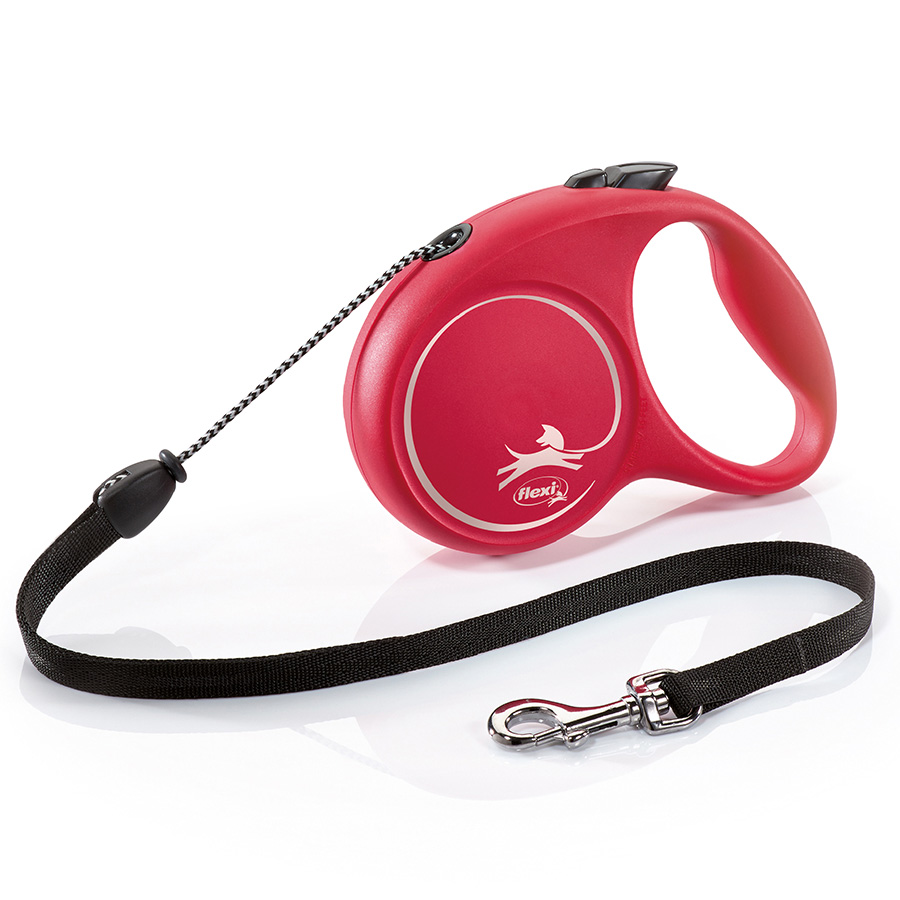

Retractable Leads
Our Thoughts On Using The Popular Retractable Leads

Retractable (or extending) leads are a popular choice among dog walkers, and are easily available from any pet shop.
They are popular primarily because they aren't as confining as regular leashes, allowing dogs more freedom to sniff and poke around on walks. But there are many downsides to using this type of lead.
A retractable lead is nothing more than a length of thin cord or tape wound around a spring-loaded device housed inside a plastic handle. The handles of most retractable leashes are designed to fit comfortably in a human hand. A button on the handle controls how much of the cord is extended.
- Many dogs, especially fearful ones, are terrorised by the sound of a dropped retractable lead handle and may take off running, which is dangerous enough. To make matters worse, the object of the poor dog's fear is then 'chasing' them, and if the leash is retracting as they run, the handle is gaining ground on them - she can't escape it. Even if this scenario ultimately ends without physical harm to the dog (or anyone else), it can create lingering fear in the dog not only of leashes, but also of being walked.
- If the handler is not paying correct attention the lead can easily wrap itself around either the dog, another dog, the handler or another person; or the handler grabs it in an attempt to reel in their dog, without thinking. The cord can cause friction burns, cuts and even amputations. In addition, many people have been pulled right off their feet by a dog that reaches the end of the leash and keeps going. This can result in bruises, "road rash", broken bones, and worse.
- It is nearly impossible to get full control of the situation if the need arises. It's much easier to regain control of, or protect, a dog at the end of a six-foot standard flat lead than it is if they are 20 or so feet away at the end of what amounts to a thin piece of string.
- The thin cord of a retractable lead can break,especially when a powerful dog is on the other end of it. If a strong, good-sized dog takes off at full speed, the cord can snap. Not only can that put the dog and whatever he may be chasing in danger, but also the cord can snap back and injure the human at the other end.
- The "control button" on the handle can fail, meaning you have no control over how far your dog can extend the lead. In no time at all your dog could be at the very end of the lead and you would have no control, which could be a disaster if it happens on a busy road.
- Retractable leads are an especially bad idea for dogs that haven't been trained to walk politely on a regular lead. By their very nature, retractable leads encourage dogs to pull while on the lead, because they learn that pulling extends the lead.

What do you suggest instead?
When walking in an area that needs greater control, such as near roads and traffic, use a standard lead. A double ended training lead is perfect, as this allows easily for two point contact, and can be set to different lengths depending on the circumstances.
When you can give your dog more more independance and agency, when away from traffic etc. then a long training line is a good idea. These are available in several lengths but a 5m or 10m line would be fine. Longer than this and it can get a bit unweildy and you can easily find yourself tangled up.
Pay out the line as the dog moves away, and as they move closer loop it back up to avoid tripping over it.
As always when out with your dog, pay close attention to what is happening. A long line can still get wrapped around you or your dog - or someone else, and this can be painful. Dogs also seem to find it fun to wrap the long line around trees and posts just to make it that much more difficult. (It is possible to train a dog a "legs" command to step out of the lead coils if they seem to be getting tangled.)
This, however, is a much better option than the retractable leads, and comes into it's own when training recall or loose lead walking.